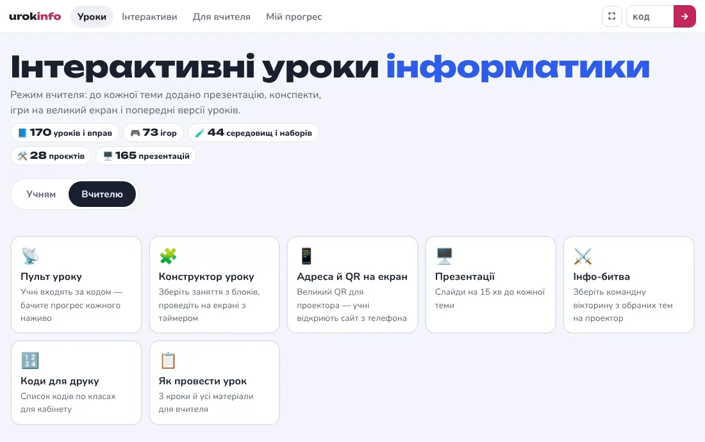
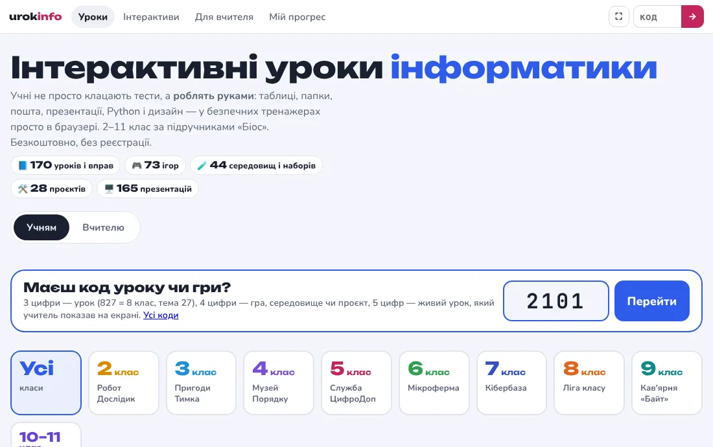
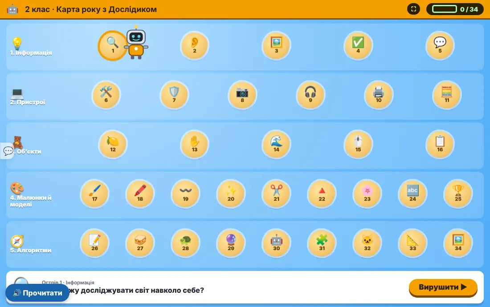
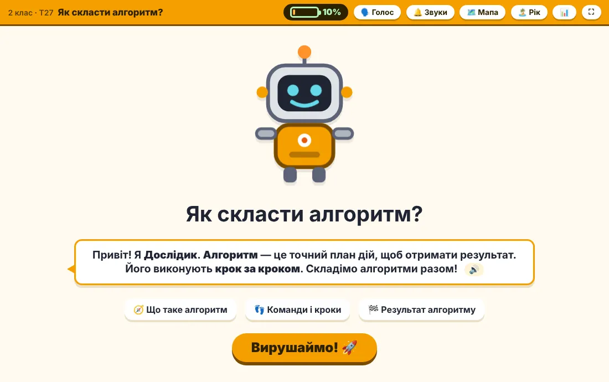
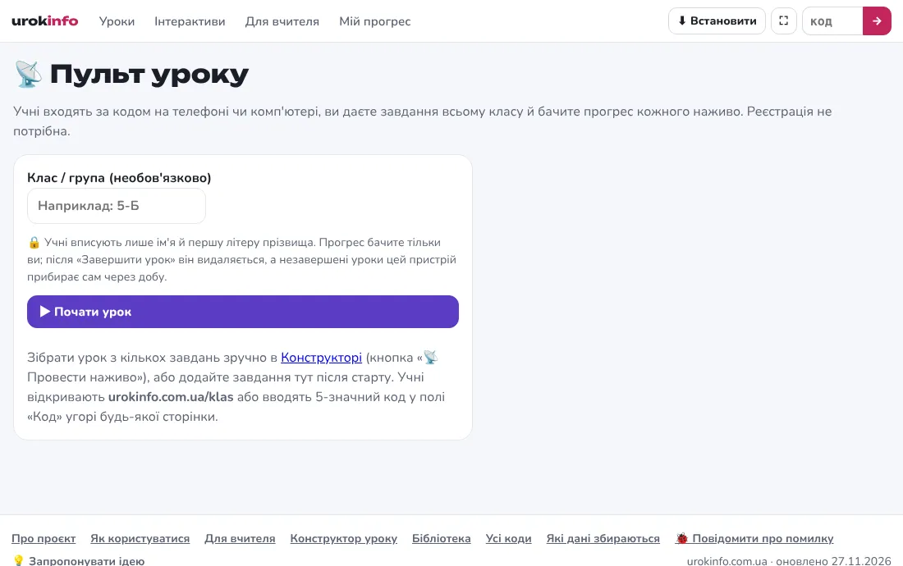

Перший урок за 5 хвилин
Ви вчитель інформатики й щойно сюди потрапили? Ось усе, що треба знати, щоб уже завтра провести інтерактивний урок. Учням не потрібні реєстрація, пошта чи застосунок, лише браузер.
- ✅ Безкоштовно
- 🎒 2–11 клас за «Біос»
- 🙅 Без реєстрації учнів
- 📱 Телефон, ПК, інтерактивна дошка
Як це працює
На головній оберіть клас: кожна тема підручника має свою картку з кодом. Натисніть «Вчителю» вгорі — побачите презентації на 15 хв, Конструктор уроку й Пульт.
Код — це номер:827 = 8 клас, тема 27.
Учні відкривають urokinfo.com.ua (або сканують QR з проектора) і вводять код у поле «Маєш код уроку?». Усе — урок відкрився.
3 цифри — урок, 4 — гра чи середовище, 5 — живий урок у Пульті.
Для молодших — карти-ігри з героями: острови Дослідика (2 кл), щоденник Тимка (3 кл), музей Сортика (4 кл). Кожна тема — окремий острів з 4 різними етапами, озвучка тексту, режим «Команди» для змагань на дошці.
Коди карт:2101, 3101, 4101.
Розминка, 10 вправ, місія (квест, майстерня, симулятор) і картки-шпаргалки. Оцінка рахує помилки й час. Учень натискає «Надіслати вчителю» — результат з розбивкою за завданнями потрапляє в журнал.
Є ще 40+ тренажерів-середовищ: таблиці, пошта, папки, Python, вебсторінки.
Відкрийте Пульт уроку → «Почати урок» → покажіть 5-значний код. Учні заходять з ім'ям і першою літерою прізвища, а ви бачите прогрес кожного, помилки й найважчі завдання класу просто зараз.
Дані уроку видаляються після «Завершити урок».
Спробуйте прямо зараз (1 хвилина)
Часті питання
Чи треба учням реєструватися?
Ні. Учні лише вводять код. Для «Надіслати вчителю» вписують прізвище, ім'я й клас у Google-форму — без акаунта.
Куди приходять оцінки?
У журнал результатів (Google-таблицю) з розбивкою: бали, помилки, час і які завдання найважчі. У Пульті — одразу на екрані вчителя.
Чи відповідає програмі?
Теми йдуть за змістом підручників «Біос» 2–11 класу. Тексти й завдання — власні, без копіювання сторінок підручника.
Чи працює на старих комп'ютерах і телефонах?
Так, потрібен лише сучасний браузер (Chrome, Edge, Firefox, Safari). Сайт можна встановити як застосунок, частина матеріалів працює без інтернету.
Я знайшов(-ла) помилку або бракує теми
Напишіть через форму нижче — автор читає кожне повідомлення й виправляє здебільшого за день-два.
Сайт робить учитель для вчителів. 2 хвилини вашого відгуку підкажуть, які теми й класи робити далі.